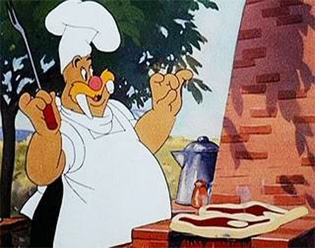
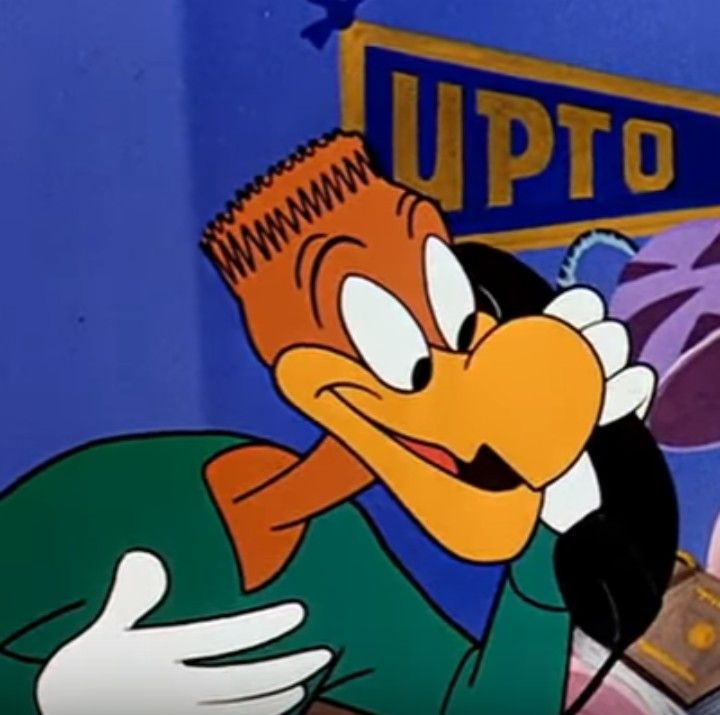
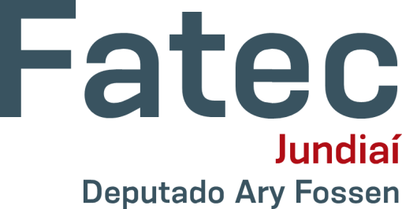
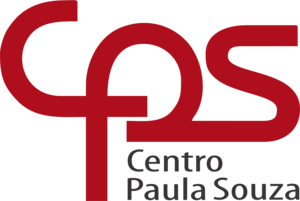
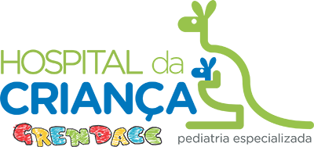
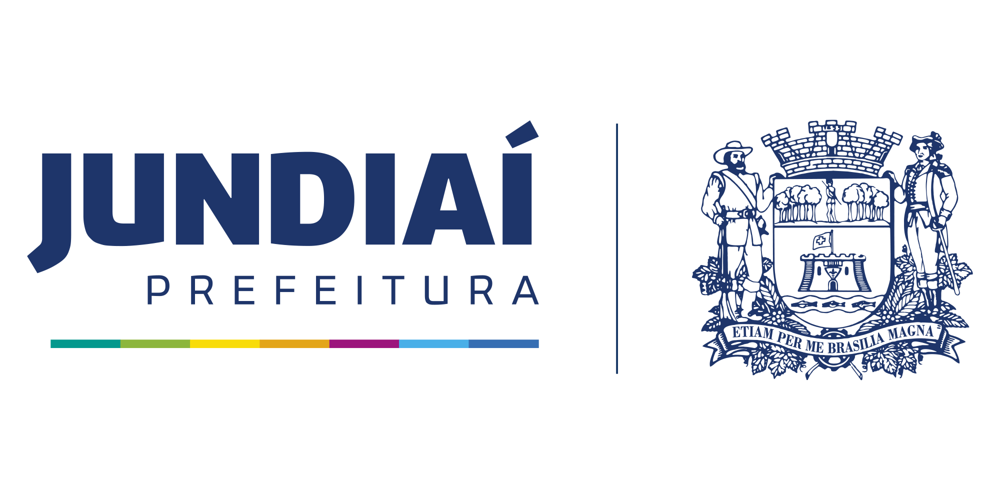
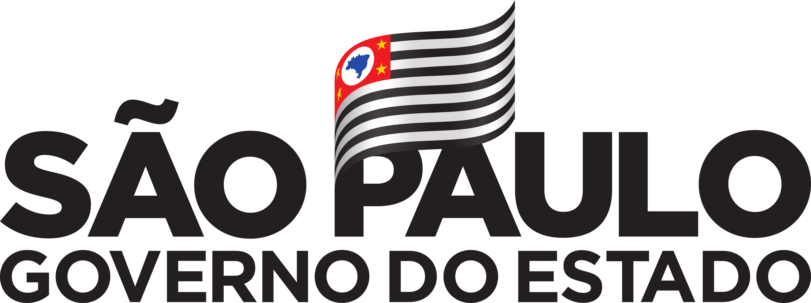

A ideia do projeto
A PHP Donations Foundation é uma organização sem fins lucrativos fundada em 2022 pelos sócios João, Lucas, Max e Vinicius.
Sua proposta é arrecadar, processar e distribuir doações monetárias para instituições de caridade, de maneira totalmente automatizada e integrada.
Com uma plataforma desenvolvida 100% pela comunidade acadêmica da Fatec Jundiaí, o projeto tem a intenção de arrecadar R$ 55.000.000,00 até o final do ano!
Sobre nós
João Taboada
Designer & Frontend Developer

Lucas Geremias
Database Analyst
Max Carmelo
Backend Developer

Vinicius Narciso
Software ArchitectureUma parceria com:




